Datagotchi
Measuring Public Perceptions
Sarah-Jane Vincent
Université Laval
Presentation outline
- The Datagotchi Project
- Datagotchi Canada 2025
- Other Editions
- Datagotchi for Sustainable Development
What is Datagotchi?
A little history…
- Yannick Dufresne, Prof. at Université Laval
- Catherine Ouellet, Prof. at Université de Montréal
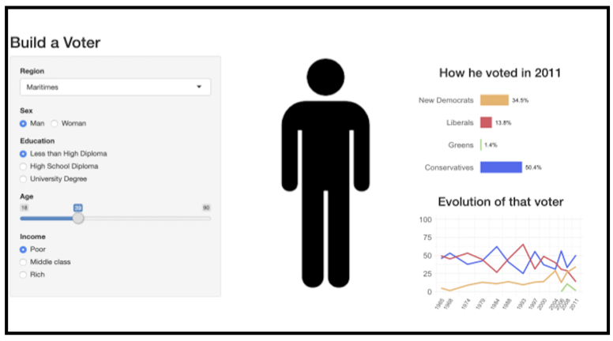
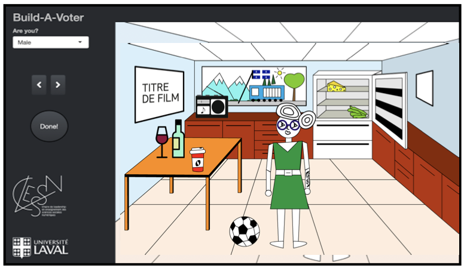
What is Datagotchi now?
- Manuel Morales, Prof. at Université de Montréal
- Simon Coulombe, Prof. at Université Laval
- René Audet, Prof. at Université Laval
- Alexandre Pelletier, Prof. at Université Laval
What is Datagotchi now?
First platform to visualize the impact of lifestyle factors in voting intentions
Interactive survey with real-time visualization
- Users receive immediate feedback on how their profile relates to voting patterns
- Visualizations update instantly as users input their information
- Creates engaging educational experience about electoral behavior
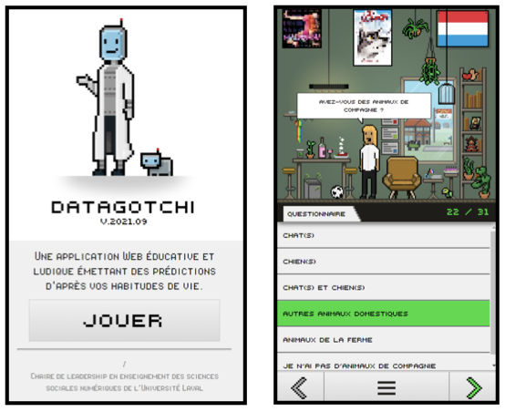
What is Datagotchi now?
Theoretical Background
- Traditional polling (1940s+)
- Social determinants strongly predicted voting behavior (Lazarsfeld et al., 1994)
- Social class, religion, residential location, etc.
- Modern electoral shift
- Traditional sociological predictors have lost explanatory power
- Modern societies: + fragmented and individualized (Dalton, 2000; Franklin, 1984; Norris, 2005)
What is Datagotchi now?
Theoretical Background
- Growing heterogeneity within traditional demographic groups
- Traditional voting groups no longer vote cohesively
- Internal fragmentation challenges conventional polling approaches (Wessels et al., 2014)
- Lifestyle emerges as critical variable in electoral behavior
- Connects personal attributes with broader social/cultural context
- Captures patterns invisible to traditional demographic segmentation
How does it work?
1. Pilot survey
Evaluating a battery of questions to assess the most contextually relevant lifestyle variables
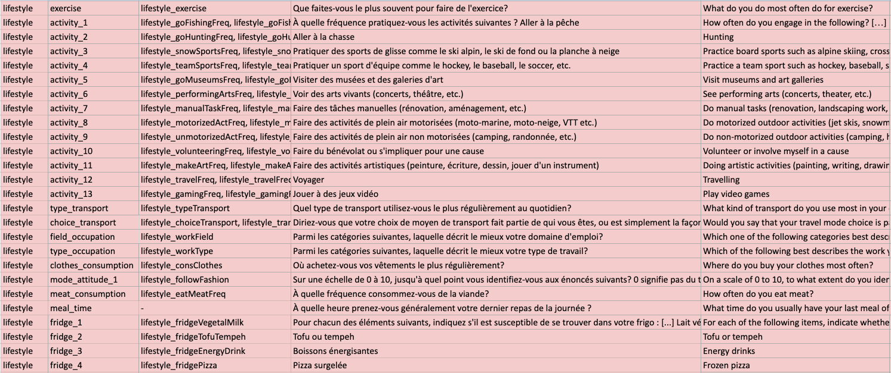How does it work?
2. Model creation
- Spliting dataset into training and validation sets
- Identifying correlations between a variety of variables (lifestyle, socio-demographic, etc.) and voting intention with regression models
- Accuracy of the model is enhanced by 11-15% when lifestyle variables are added to socio-demographics
- Creating statistical model to predict voting based on inputs
- Testing and validating model performance
How does it work?
3. App development
- Participants answer ~30 lifestyle and socio-demographic questions
- The app processes these responses using a predictive model
- Users receive their personalized voting prediction
Key point: Prediction made without asking political questions
Key objectives
Data collection tool: Scientific contributions through academic publications, international conferences, etc.
Key objectives
Raising awareness on the importance of personal data:
- Richness and predictive value of individual data
- Political Parties and businesses have access to it and can use it as they wish
- Importance of the interactive simulator
- A tool for depolarization (fostering mutual understanding)
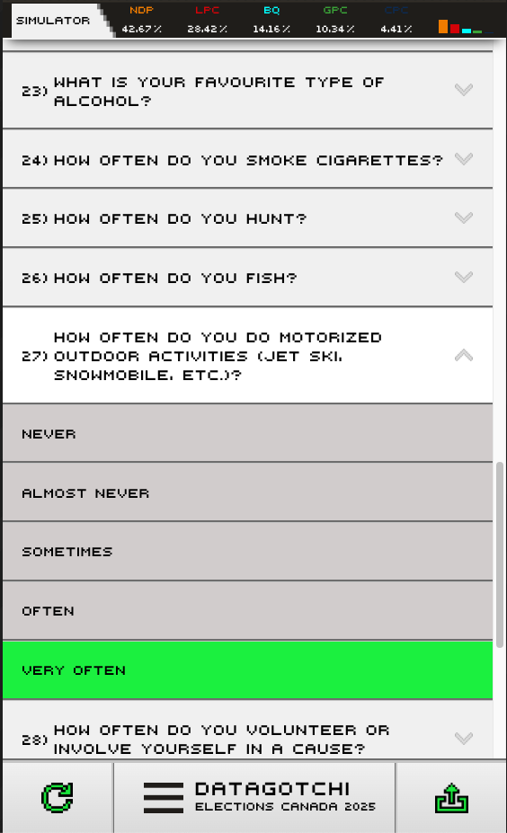
Key objectives
Student training on all stages of the project:
- Conducting literature reviews to inform questionnaire design
- Coordinating with ethics committees
- Preparing funding proposals
- Programming surveys
- Creating and refining statistical models
- Maintaining relationships with partners
- Performing data analysis
- Writing academic publications
- Communicating findings to the general public
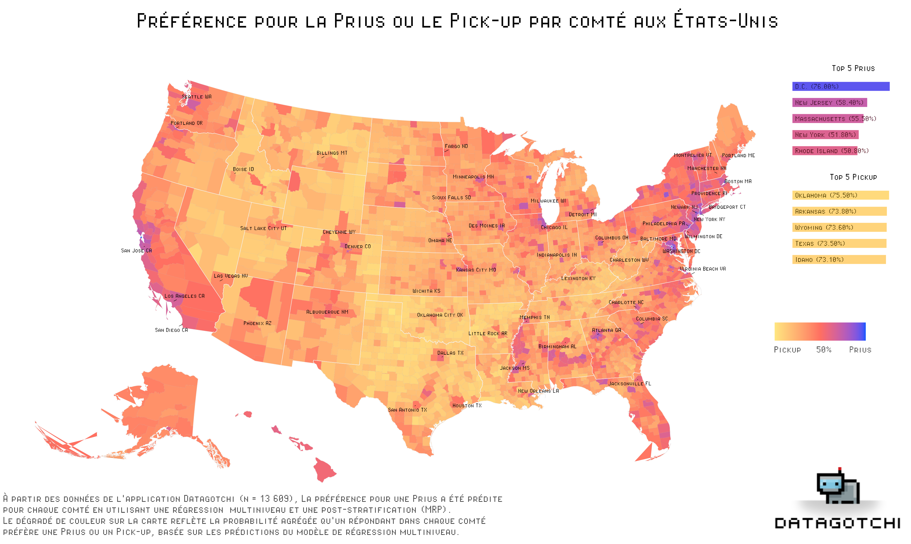 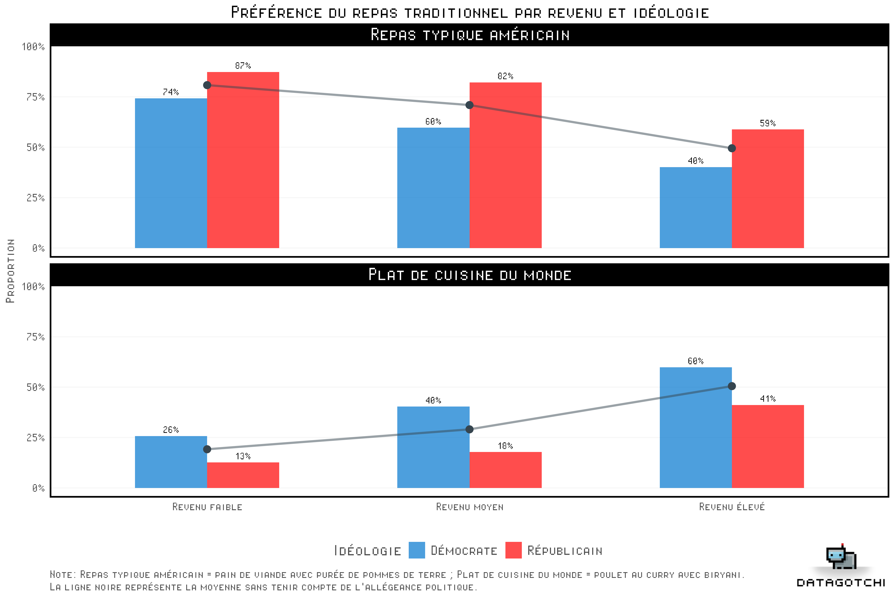
Datagotchi Canada 2025
Our latest edition
- Main Objective: Predict voting intention for Canadian voters
- New addition: Clusters based on lifestyle variables
- Simultaneous use of a panel
- Track questions throughout the whole political campaign
- Partnership with Léger
Datagotchi Canada 2025
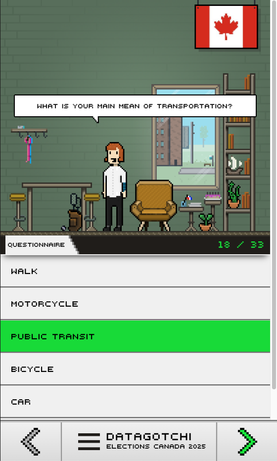
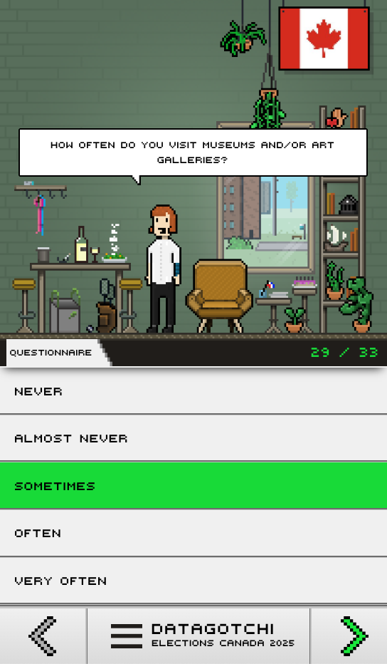
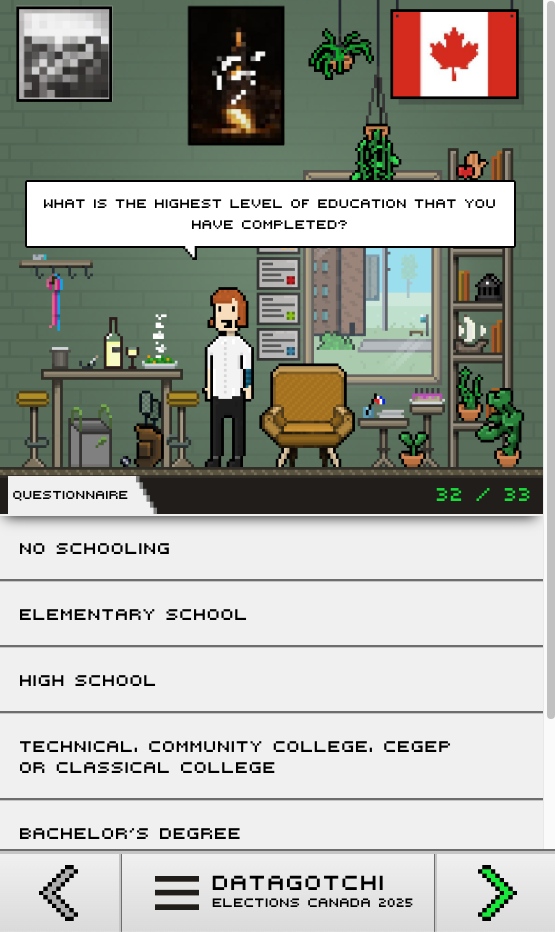
Datagotchi Canada 2025
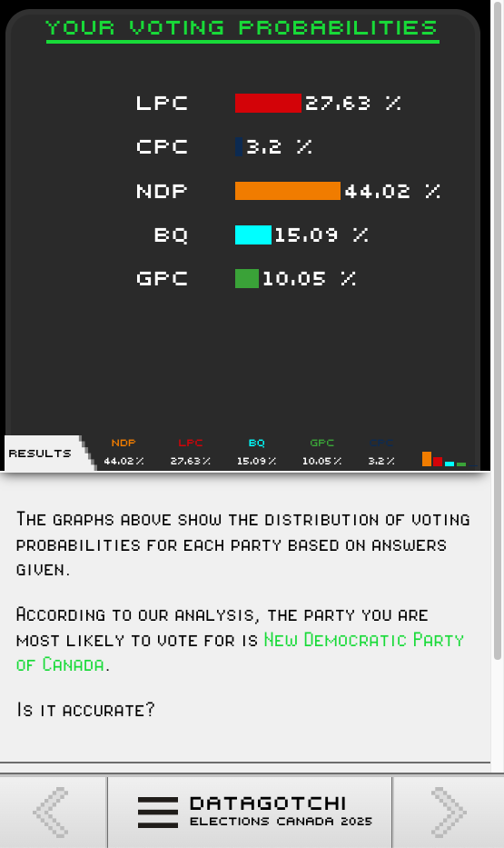
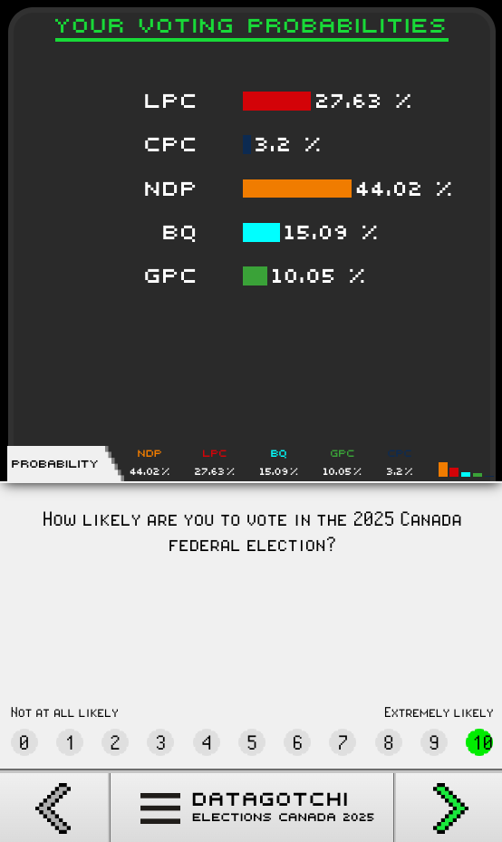
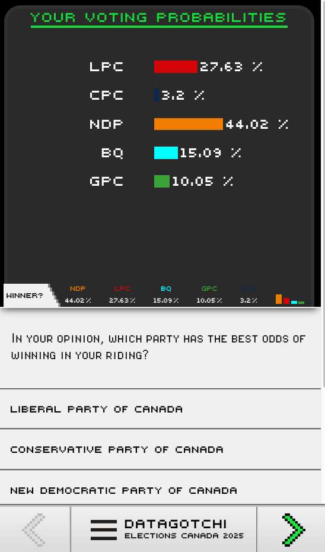
Datagotchi Canada 2025
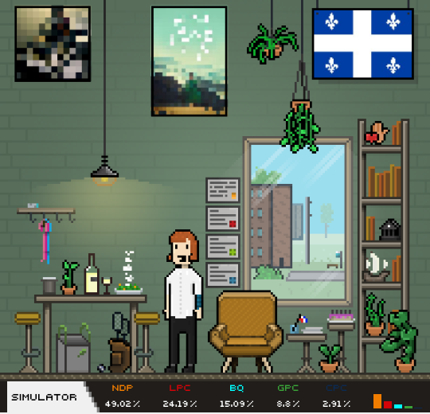
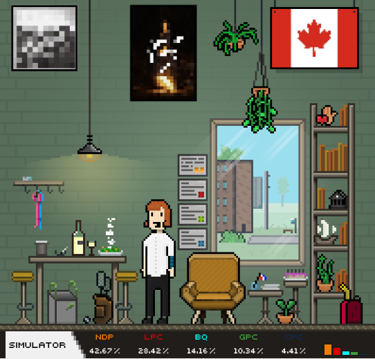
And more…
Past editions:
- Datagotchi Canada 2021
- Datagotchi Québec 2022
- Datagotchi US 2024
Upcoming political editions:
- Datagotchi Japan
- Datagotchi Indonesia, Tunisia, and Senegal
And more…
Datagotchi Literature
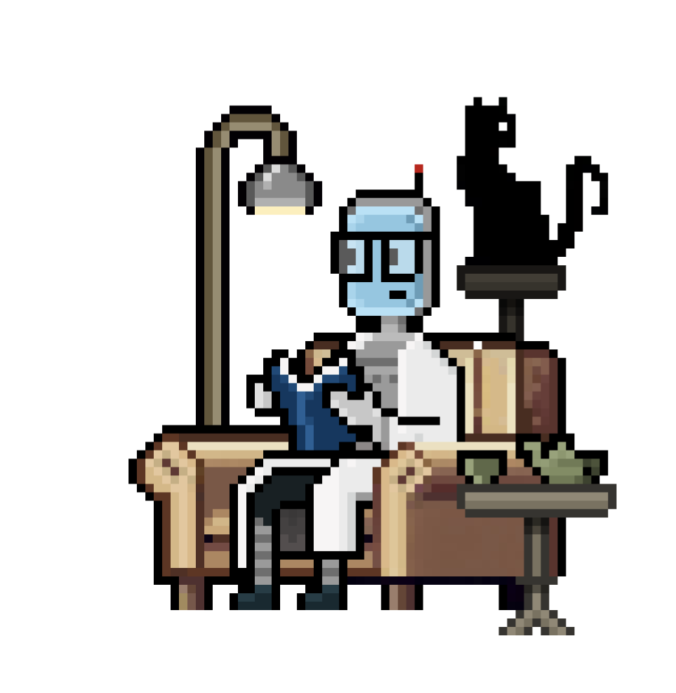
- Literary Preferences Analysis
- Predicting favorite genres
- Providing personalized recommendations
- Innovative Access Features
- QR-coded bookmarks for each genre
- Partnership
- Les Libraires
- Showcase at book fairs with positive feedback
And more…
Datagotchi Health
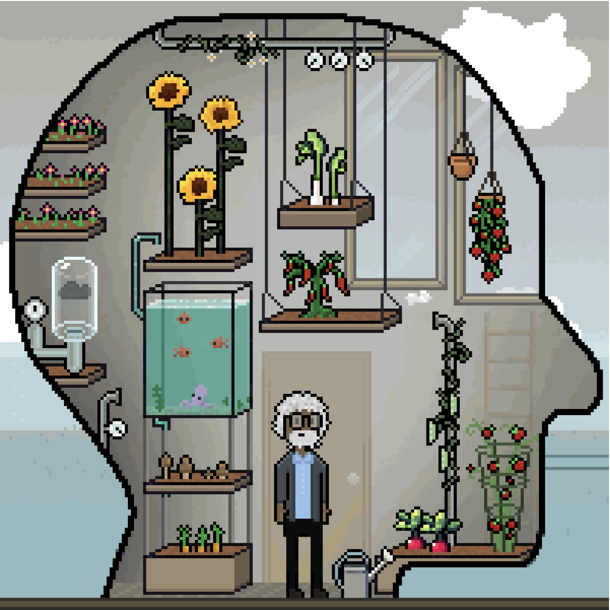
- Predicting well-being levels
- Based on habits, workplace environment, sleep quality & much more
- Key objectives
- Identify factors affecting well-being
- Provide personalized recommendations of micro-actions to be implemented
- Status: In active development
And more…
Datagotchi Chatbot
Transforming data collection through AI conversations:
- Conversational interface
- Capture unstructured data
- For instance, close-ended questions on clothing style and occupation might limit the accuracy of responses
- Possibility to analyze semantics, vocabulary, and tone
Status: In active development

From a static survey to a dialogue
Datagotchi
Datagotchi Chatbot
And finally…
Datagotchi for sustainable development?
¡Muchas Gracias!
Contact Us
Camille Pelletier
camille.pelletier.12@ulaval.ca
Sarah-Jane Vincent
sarah-jane.vincent.1@ulaval.ca
Social Media
: Datagotchi
: @datagotchi.bsky.social
: Datagotchi_fr & Datagotchi_en
: Datagotchi_fr & Datagotchi_en
: Datagotchi_fr & Datagotchi_en www.datagotchi.com
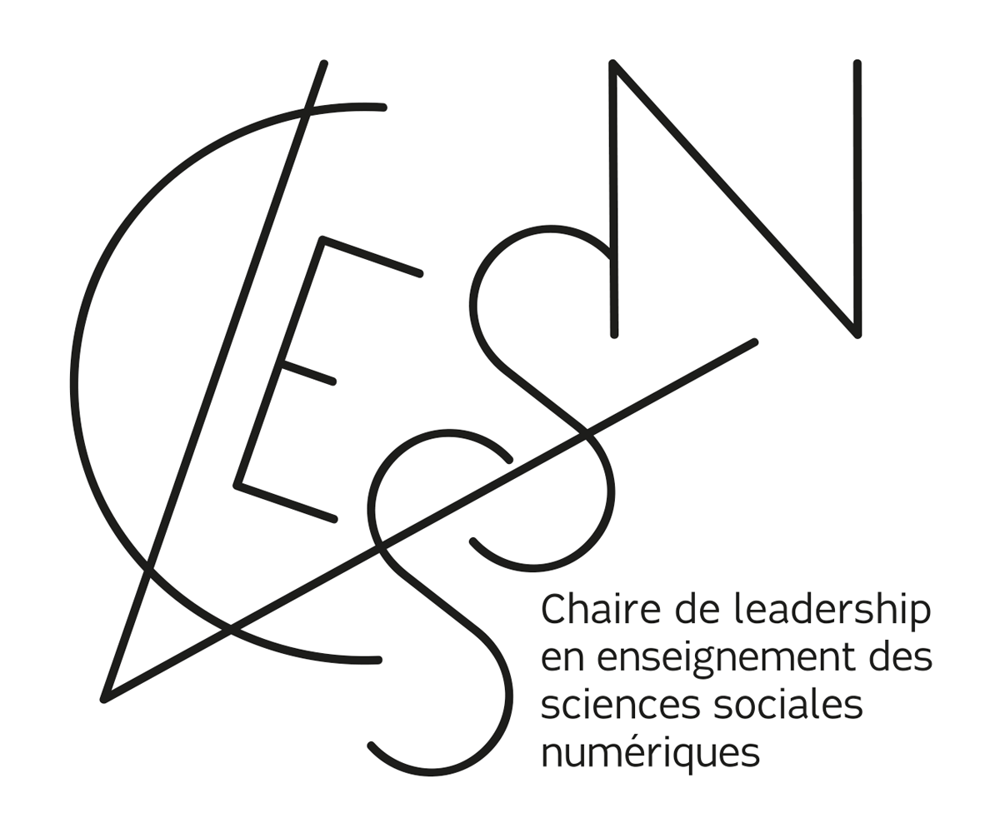
Datagotchi